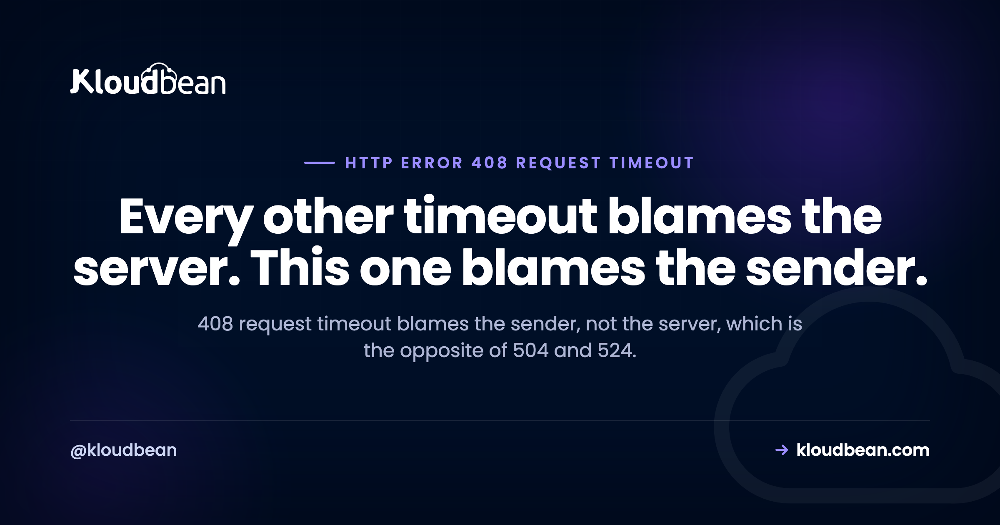

HTTP Error 408 Request Timeout: The Client Was Too Slow

A 408 request timeout is the odd one out in the timeout family. Every other code you'll meet with the word timeout in it means the server took too long to answer. This one means the opposite: the server was waiting, ready, and your request never finished arriving. That inversion trips up almost everyone, and it sends people tuning response timeouts that have nothing to do with the problem. There's also a good chance the 408s in your log were never seen by a single visitor.
Per RFC 9110, the server did not receive a complete request message within the time it was prepared to wait. So the request stalled partway: headers or body never finished arriving. That's the reverse of 504 and 524, where the request arrived fine and the response was too slow. Two practical surprises. In nginx, 408 is largely a status written to logs rather than sent to clients, so your access log can show 408s that nobody experienced. And if nginx sits behind a cloud load balancer, that silent connection close is often reported to the client as a 502 instead.
408 blames the sender. 504 and 524 blame the server
Get this straight before touching any configuration, because the two halves of the timeout family need opposite fixes.
| Code | What was too slow | Which timeout to look at |
|---|---|---|
| 408 Request Timeout | The request arriving from the client | Read timeouts: header and body |
| 504 Gateway Timeout | The upstream response coming back | Proxy read timeouts, slow queries |
| 524 (Cloudflare) | The origin response coming back | Application work, background jobs |
| 522 (Cloudflare) | Nothing. The connection never opened | Filtering, capacity, routing |
If you're actually looking at a slow response rather than a slow request, 504 Gateway Timeout is the right guide and it covers the five real causes plus when raising a timeout is legitimate. For the edge version of the same split, 522 versus 524.
Why your nginx log shows 408s nobody reported
This is the part that saves the most wasted time, and it comes from nginx's own issue tracker rather than from folklore.
When client_header_timeout or client_body_timeout expires, nginx closes the connection without sending anything back. The position recorded in nginx's tracker is that the 408 status is only used when writing logs, and that sending a response to a connection that has already timed out is considered a waste of resources. There's a long-standing nginx ticket noting that client_body_timeout does not send a 408 the way people expect it to.
Three consequences follow, and each one explains a common confusion:
| What you observe | Why |
|---|---|
| 408s in the access log, zero support tickets | Nothing was sent to the client. The status exists only in your log line. |
error_page 408 appears to do nothing | There is no response to replace, so there is nothing for the directive to act on. |
| 408s that correlate with nothing in particular | Idle connections closing get logged the same way. Often entirely harmless. |
So before you treat a log full of 408s as an incident, work out whether any human was affected. Correlate against real user-facing failures rather than assuming the log line implies one:
# How many 408s, and did they carry any request at all?
awk '$9 == 408 {print $7}' /var/log/nginx/access.log | sort | uniq -c | sort -rn | head
# A large count of "-" request paths points at idle connections, not broken users.The 502 that is really a 408
Here's where the log-only behaviour stops being a curiosity and starts costing real debugging hours.
Put nginx behind a cloud load balancer, which is the normal shape of a production deployment now. A client stalls mid-request. nginx hits its read timeout and closes the connection silently, exactly as designed. The load balancer, sitting in front, sees its backend connection terminated with no response and reports that to the client as a 502.
The nginx feature request asking for an optional real 408 response was filed for precisely this reason: a 502 normally means a server-side failure, so getting one from a client-side problem is genuinely misleading. Your monitoring lights up with backend errors. Your team starts looking at the application. The application was fine, and so was nginx. The client's upload stalled.
How to recognise it: 502s at the load balancer that have no matching 5xx in the nginx log, paired with 408 lines at roughly the same timestamps. That combination is close to diagnostic. If you're chasing 502s more generally, 502 Bad Gateway covers the ordinary causes, and how load balancers work covers why the front and back halves report differently.
If you are hitting 408s as a user
Short list, because there genuinely isn't much on your side.
Retry. The spec explicitly allows it: if the client has an outstanding request in transit it may repeat it, on a new connection if the old one is no longer usable. A stalled request is frequently a transient network event, and most 408s a browser encounters are retried without you ever noticing.
Suspect your connection before the site. A large form or file upload over a weak mobile or hotel connection is the classic cause. The bytes trickle, the server's patience runs out. Try the same action on a different network before concluding the site is broken.
Check the size of what you're sending. If it only fails on large uploads, you may be near a limit rather than a timeout, and those produce different codes. A body that exceeds the configured maximum returns 413, not 408, so which code you get tells you which wall you hit.
If you operate the server
Know which directive governs the read. The names differ per server and mixing them up with response timeouts is the usual mistake.
| Server | Governs how long it waits for the request |
|---|---|
| nginx | client_header_timeout and client_body_timeout, both 60 seconds by default |
| Apache | Timeout, and more precisely RequestReadTimeout from mod_reqtimeout |
| IIS | connectionTimeout |
Note that Apache's mod_reqtimeout is the more useful control, because it can express a minimum data rate rather than a flat deadline. That distinction matters for the next section.
Separate the harmless 408s from the real ones. Idle keep-alive connections closing look identical in a log to a genuinely stalled upload. Logging the request path and the bytes received alongside the status is what makes them distinguishable, which is a good argument for structured logging rather than parsing a combined-format line with awk forever.
Raise read timeouts deliberately, not reflexively. If real users on slow connections are failing legitimate uploads, a longer body timeout is the correct fix. Just understand what you're trading, which is the next section.
Slowloris, and why the timeout exists at all
The read timeout isn't arbitrary tidiness. It's a security control.
The Slowloris technique works by opening many connections and sending each request deliberately slowly, never completing any of them. Every open connection holds a worker slot. Send them slowly enough and the server stays technically healthy while having no capacity left for anyone real. The read timeout is what reclaims those slots.
Which means raising it has a cost. A longer client_body_timeout is more forgiving of genuine slow uploads and also cheaper to exhaust. There's no universally right number, and anyone who gives you one without asking about your traffic is guessing. The better answer, where your server supports it, is a minimum data rate rather than a flat deadline: that tolerates a slow-but-progressing upload while still cutting off a connection that is deliberately dribbling. Apache's mod_reqtimeout expresses exactly that.
One practical read on the logs: a sudden spike in 408-class lines from a narrow set of addresses, with almost no bytes received on each, looks much more like this technique than like a network fault. Worth checking before tuning anything upward.
How the platform touches HTTP Error 408 Request Timeout
Start with the limit. If a visitor is on a poor mobile connection, nothing you configure on the server fixes their upload. That's their network, and the honest extent of your influence is choosing not to set a timeout so tight that ordinary mobile traffic fails.
The genuinely useful thing a managed platform contributes here is visibility, and the log-only behaviour above is exactly why. On Kloudbean the reverse proxy is managed with maintained timeout configuration rather than a file someone edited once, and server health metrics sit in the same dashboard as both the server and application logs. That matters for this specific error because the diagnosis depends entirely on correlating a log line against whether any real request was affected, and against whether connection counts were climbing at the time. Seven cloud providers, free SSL issued and renewed, and free migration assistance if you're moving something already running.
The boundary stays where it always is. Patching, TLS renewal, backups and stack upkeep are not on your list. Your application code, your upload flows, and your visitors' networks remain yours.
HTTP Error 408 Request Timeout is rarely alone
The opposite direction, and the one people usually actually have: 504 Gateway Timeout. At the edge, 522 connection timed out covers the two separate clocks Cloudflare runs. When the silent close surfaces as something else, 502 Bad Gateway and cloud load balancers explained. When the client is the one who gave up rather than the server, that is nginx's 499 client closed request. For a connection killed mid-flight rather than stalled, ERR_CONNECTION_RESET. On the proxy layer itself, nginx as a reverse proxy for Node. And if the failure is really about what you sent rather than how slowly, 415 Unsupported Media Type.
Correlate the log line against what actually happened.
Managed servers across seven clouds with a managed reverse proxy and maintained timeout configuration, plus server health metrics beside both server and application logs in one dashboard. Free SSL issued and renewed. Free migration assistance included. Start at kloudbean.com or see pricing.
Managed reverse proxy · Server metrics · App and server logs · Free SSL · One dashboard
FAQ
What does a 408 request timeout mean?
Per RFC 9110 it means the server did not receive a complete request message within the time it was prepared to wait. The request stalled partway, so headers or body never finished arriving. It is a statement about the request coming in, not about the response going back, which makes it the opposite of 504 and 524.
What is the difference between 408 and 504?
Direction. A 408 means the request from the client was too slow to arrive, so you look at read timeouts for headers and body. A 504 means the request arrived fine and the upstream response was too slow, so you look at proxy read timeouts, slow queries, and long-running work. Tuning a proxy read timeout will never fix a 408.
Why do I see 408s in my nginx log that no user reported?
Because nginx largely uses 408 as a status written to logs rather than one sent to clients. When a header or body read timeout expires it closes the connection without responding, on the basis that replying to a timed-out connection wastes resources. So the log line can exist with no human ever having seen an error, and idle connections closing get recorded the same way.
Why does error_page 408 not work in nginx?
Because there is no response being sent for the directive to replace. The connection is closed silently when the read timeout expires, so there is nothing to substitute a custom page into. There is a long-standing request in nginx's tracker asking for an option to return a real 408 precisely because of this behaviour.
Can a 408 show up as a 502?
Yes, and it is a common source of misdirected debugging. If nginx sits behind a cloud load balancer, the silent connection close on a read timeout looks to the load balancer like a backend that terminated without responding, and it reports 502 to the client. The tell is 502s at the load balancer with no matching 5xx in the nginx log, alongside 408 lines at similar timestamps.
Which timeout setting controls a 408?
In nginx, client_header_timeout and client_body_timeout, both 60 seconds by default. In Apache, the Timeout directive and more precisely RequestReadTimeout from mod_reqtimeout. In IIS, connectionTimeout. All of these govern how long the server waits for the request to arrive, which is different from the directives that govern waiting for an upstream response.
Should I just raise the request timeout?
Only deliberately, because the timeout is a security control. The Slowloris technique holds many connections open with deliberately incomplete requests to exhaust worker slots, and the read timeout is what reclaims them. A longer timeout is more forgiving of genuine slow uploads and also cheaper to attack. Where your server supports a minimum data rate instead of a flat deadline, that is the better tool.
Is a 408 my fault or the server's?
Neither party is necessarily misbehaving. The server is reporting that it stopped waiting, which is usually correct behaviour, and the client may simply be on a slow or unstable connection. As a visitor, retry and try a different network. As an operator, check whether real requests were affected before treating the log entries as an incident.